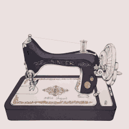

Bernina activa 210 – Symaskine guide
Klargør maskine
- Tråd og indsæt undertråd som vist på guiden.
YouTube: Trådning af Bernina activa 210
Hvordan man spoler undertråd
- Følg denne video.
YouTube: Spol undertråd på Bernina activa 210
Andre ting
- Brug en ny nål, der passer til stoffet. Den flade side skal vende bagud.
- Start med lige sting og stinglængde ca. 2–3. Prøv altid på en stofrest.
- Hvis tråden laver løkker eller knækker, så tråd maskinen om og kontrollér nålen.
- Sluk maskinen, før du skifter nål, trykfod eller spole.
- Fjern fnug ved spolehuset med en lille børste.
- Spørg en ansat.
- Se begynderguide til at sy.